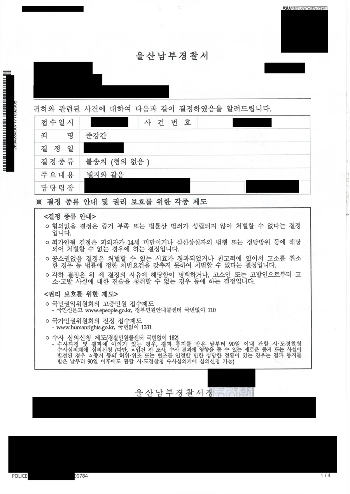

핵심 결과
준강간 사건에서 가장 많이 나오는 진술이 있습니다.
기억이 나지 않는다는 말입니다.
그런데 기억이 없다는 것과 항거불능 상태였다는 것은 법적으로 같은 말이 아닙니다.
대법원은 이 둘을 명확히 구별하고 있습니다.
이 사건은 그 구별을 정면으로 다툰 사건이었습니다.
경찰은 항거불능 상태였다고 단정하기 어렵다고 판단했고, 사건은 혐의없음 불송치로 종결됐습니다.
| 구분 | 내용 |
|---|---|
| 사건 분야 | 준강간 (형법 제299조) |
| 고소 내용 | 술에 취해 잠든 상태에서 간음당했다는 주장 |
| 피의자 입장 | 동의하에 이루어진 관계였다는 진술 |
| 핵심 쟁점 | 블랙아웃인지 항거불능인지 |
| 결정적 자료 | 사건 전후 카카오톡 대화, 통화 녹취 |
| 최종 결과 | 혐의없음 불송치 (증거불충분) |
어떤 사건이었나
두 사람은 술자리 뒤 숙소로 이동했습니다.
고소인은 방에 들어간 후 술에 취해 바로 잠이 들었고, 술에 취한 상태에서 성폭력 피해를 당했다고 진술했습니다.
의뢰인의 진술은 달랐습니다.
동의하에 자연스럽게 관계를 가졌다는 것이었습니다.
두 사람 외에 목격자는 없었습니다.
이런 사건은 대개 진술 대 진술로 흘러갑니다.
그리고 그 구도에서는 고소인 진술의 신빙성이 유일한 판단 기준이 되기 쉽습니다.
준강간 사건이 특히 위험한 이유
- 형법 제299조 준강간의 법정형은 강간죄와 같습니다.
- 밀실에서 벌어지는 일이라 객관적 증거가 거의 없습니다.
- 유죄가 되면 신상정보 등록과 취업제한이 따라옵니다.
- 구속 상태로 수사가 진행되는 경우도 많습니다.
- 억울하다는 말만 반복하면 반성 없는 부인으로 읽힙니다.
첫 조사에서 방향을 잘못 잡으면 되돌리기 어렵습니다.
술에 취해 기억이 없으면 준강간이 되나요
아닙니다. 기억이 없는 것과 항거불능 상태였던 것은 다릅니다.
준강간죄는 사람의 심신상실 또는 항거불능 상태를 이용해 간음한 경우에 성립합니다.
여기서 항거불능은 저항이 불가능하거나 현저히 곤란한 상태를 말합니다.
그런데 술을 마신 사람에게는 다른 현상이 나타날 수 있습니다.
행동은 정상적으로 하면서 그 시간의 기억만 형성되지 않는 상태입니다.
이것을 블랙아웃이라고 합니다.
대법원은 이 점을 정리해 두었습니다.
범행 당시 피해자가 알코올의 영향으로 기억 형성의 실패만 야기된 이른바 블랙아웃 상태였다면, 피해자는 기억장애 외에 인지기능이나 의식 상태의 장애에 이르렀다고 인정하기 어렵다는 취지입니다.
즉 나중에 기억이 나지 않는다는 사정만으로는 그 당시 항거불능이었다고 단정할 수 없습니다.
| 구별해야 할 두 상태 | 내용 |
|---|---|
| 알코올성 블랙아웃 | 행동과 판단은 가능했으나 그 시간의 기억이 저장되지 않은 상태 |
| 심신상실·항거불능 | 의식이나 인지기능 자체가 저하되어 저항이 불가능하거나 현저히 곤란한 상태 |
| 법적 결론 | 블랙아웃만으로는 준강간의 항거불능 요건이 충족되지 않습니다 |
쟁점은 지금 기억나느냐가 아니라, 그때 어떤 상태였느냐입니다.
그럼 그때의 상태를 무엇으로 증명하나요
당사자의 기억이 아니라, 그 시간에 남은 기록으로 증명합니다.
사람의 기억은 사후에 재구성됩니다.
특히 술이 개입되면 더 그렇습니다.
그래서 수사기관은 사건 전후에 자동으로 남은 자료를 봅니다.
메신저 대화, 통화 내역과 녹취, 이동 경로, 결제 내역 같은 것들입니다.
이 자료들은 당사자의 의사와 무관하게 그 시각에 그대로 기록됐다는 점에서 신빙성이 높습니다.
해결 전략
1. 사건 전후의 대화 기록을 시간순으로 복원했습니다
두 사람이 처음 만난 시점부터 사건 이후까지 남아 있는 카카오톡 대화와 통화 내역을 시간순으로 정리했습니다.
여기서 두 가지가 드러났습니다.
첫째, 관계가 형성되어 온 과정이 확인됐습니다.
둘째, 두 사람 모두 그날의 만남에서 성관계가 이루어질 수 있다는 점을 충분히 짐작할 수 있는 대화가 오갔습니다.
이 점에 대해서는 양측 사이에 다툼이 없었습니다.
2. 진술과 기록의 어긋난 지점을 짚었습니다
고소인은 기억이 나지 않는다고 하면서도 일부 기억나는 상황에 대해서는 구체적으로 진술했습니다.
그 진술 내용을 같은 시각의 대화 기록, 통화 녹취와 하나씩 대조했습니다.
그 결과 진술한 피해 상황과 실제 기록이 배치되는 지점이 확인됐습니다.
이 부분에 대해 납득할 만한 설명이 나오지 않았습니다.
여기서 중요한 것은 태도입니다.
고소인을 몰아세우는 방식이 아니라, 객관적 자료와 진술이 어긋난다는 사실만 정확히 제시했습니다.
3. 대법원 법리를 사건에 직접 대입했습니다
기록만 제출하면 수사기관이 알아서 법리를 적용해 주지는 않습니다.
블랙아웃과 항거불능을 구별한 대법원 판단을 인용하고, 이 사건의 사실관계가 어느 쪽에 해당하는지를 항목별로 대응시켰습니다.
기억장애는 있었을 수 있으나 인지기능이나 의식 상태의 장애에 이르렀다고 볼 자료는 없다는 결론까지 정리해 의견서로 제출했습니다.
결과
경찰은 확보된 증거 자료와 양측 진술, 사건 전후 상황, 사건 접수 경위 등을 종합했습니다.
그 결과 고소인이 성폭력 피해 당시 항거불능 상태에 있었다고 단정하기 어렵다고 보았습니다.
두 사람이 처음 만난 후 이어진 관계 형성 과정, 사건 전후 대화 내역, 통화 녹취를 종합하면 그날의 만남에서 성관계가 이루어진다는 사실을 충분히 짐작할 수 있었다는 점에도 다툼이 없다고 판단했습니다.
최종 결과
고소인의 진술만으로는 항거불능 상태를 이용해 간음했다고 단정하기 부족하고, 달리 혐의를 인정할 증거가 없다고 판단됐습니다.
증거불충분, 혐의없음 불송치로 사건이 종결됐습니다.
재판은 물론 검찰 송치도 없이 경찰 단계에서 끝났습니다.
조사를 앞두고 있다면
가장 먼저 할 일은 지우지 않는 것입니다.
불리해 보이는 대화를 지우는 순간 상황이 나빠집니다.
삭제 사실 자체가 확인되면 은폐로 읽히고, 정작 유리한 맥락까지 함께 사라집니다.
이 사건에서 결정적이었던 것도 남아 있던 대화와 녹취였습니다.
다음은 기록의 보전입니다.
메신저 대화는 기기를 바꾸거나 앱을 지우면 복구가 어렵고, 통화 녹음은 저장 기간이 지나면 삭제됩니다.
캡처만으로는 부족한 경우가 많아 원본이 남아 있는 상태에서 보전 절차를 밟아야 합니다.
마지막은 진술의 일관성입니다.
첫 조사에서 한 말이 이후 절차 전체의 기준이 됩니다.
기억나지 않는 부분을 추측해서 메우면 나중에 진술 번복으로 취급됩니다.
자주 묻는 질문
| 질문 | 답변 |
|---|---|
| 상대가 기억이 안 난다고 하면 무조건 준강간인가요? | 아닙니다. 기억 형성의 실패만 있는 블랙아웃 상태라면 항거불능으로 인정되지 않습니다. |
| 블랙아웃과 항거불능은 어떻게 구별하나요? | 그 당시 행동과 대화가 가능했는지를 대화 기록, 이동 경로, 결제 내역 등 객관적 자료로 판단합니다. |
| 카카오톡 대화를 지우면 안 되나요? | 지우면 안 됩니다. 삭제 자체가 불리하게 작용하고 유리한 맥락도 함께 사라집니다. |
| 동의가 있었다는 것을 어떻게 증명하나요? | 사건 전후 대화와 만남의 경위, 두 사람의 관계 형성 과정을 시간순으로 복원해 입증합니다. |
| 경찰 단계에서 끝날 수 있나요? | 가능합니다. 이 사건도 불송치 결정으로 검찰 송치 없이 종결됐습니다. |
| 무혐의를 받으면 신상정보 등록도 없나요? | 없습니다. 등록과 취업제한은 유죄판결이 있어야 부과됩니다. |
결론
준강간 사건의 승패는 기억이 아니라 기록에서 갈립니다.
기억이 나지 않는다는 진술은 그 자체로 항거불능의 증명이 되지 못합니다.
대법원도 블랙아웃과 항거불능을 구별하고 있습니다.
그 구별을 사건의 사실관계에 정확히 대입하고, 그 시각에 남은 자료로 뒷받침해야 결과가 달라집니다.
그리고 그 자료는 시간이 지나면 사라집니다.
본 사례는 의뢰인 보호를 위해 일부 내용을 각색했으며, 처분 결과는 실제와 같습니다.
사무장·상담실장 없이 변호사가 직접 상담합니다
성범죄 사건은 첫 조사에서 방향이 정해집니다.
준비 없이 조사에 들어갔다가 나중에 뒤집으려면 훨씬 어려워집니다.
법무법인 우린은 강성수 변호사가 직접 상담하고, 증거 보전과 진술 준비, 법리 의견서 작성까지 직접 진행합니다.
준강간으로 고소를 당했거나 경찰 연락을 받았다면, 지금 남아 있는 대화와 통화 기록부터 확인해야 합니다.
이 글은 일반적인 법률 정보 제공을 위한 자료이며, 개별 사건의 결과를 보장하지 않습니다. 구체적인 대응은 사실관계와 증거에 따라 달라질 수 있습니다.